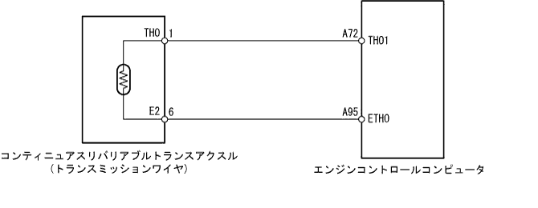
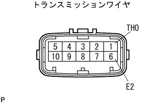
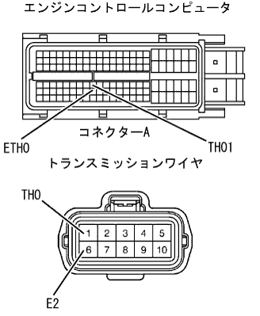

DTC P0710/38 Fluid Temperature Sensor Circuit |
DTC P0712/38 Fluid Temperature Sensor Circuit (Low) |
DTC P0713/38 Fluid Temperature Sensor Circuit (High) |
| DTC No. | DTC Detection Conditions 1. Diagnosis conditions 2. Malfunction status 3. Malfunction duration 4. Other | Inspection Area |
|---|---|---|
| P0710/38 |
|
|
| P0712/38 |
|
|
| P0713/38 |
|
|

| Step 1 | Read TaSCAN Data (A/T Oil Temperature 1 (CVT Fluid Temperature)) |
Using SST (TaSCAN), display the [ECU Data Monitor] screen according to the screen display, and check the computer data.
| Item Name [Symbol] | Item Description | Condition | Reference Value |
|---|---|---|---|
| A/T Fluid Temperature1 [THO1] | Indicates CVT fluid temperature Display range: -40 to 215°C | IG ON when cold | Outside Temperature |
| A/T Fluid Temperature1 [THO1] | Indicates CVT fluid temperature Display range: -40 to 215°C | After stall test | Approx. 100°C |
| Result | Proceed to |
|---|---|
| NG | A |
| OK | B |
|
| ||||
| A | |
| Step 2 | Inspect Continuously Variable Transaxle Assembly (Fluid Temperature Sensor) |
 |
Disconnect the transmission wire connector.
Using SST (Toyota electrical tester), measure the resistance between the connector terminals.
| Tester Connection (Terminal Name) | Condition | Standard |
| 1(THO) - 6(E2) | Fluid temperature 10°C | 6.445kΩ |
| 1(THO) - 6(E2) | Fluid temperature 25°C | 3.5kΩ |
| 1(THO) - 6(E2) | Fluid temperature 110°C | 0.247kΩ |
| 1 (THO) - Body ground | Always | 10k Ω or higher |
|
| ||||
| OK | |
| Step 3 | Inspect Wire Harness and Connector (Continuously Variable Transaxle [Transmission Wire] - Engine Control Computer) |
 |
Check that the connector case and terminals of the transmission wire are not deformed or damaged.
Disconnect engine control computer connector A, and using SST (Toyota electrical tester), measure the resistance between the engine control computer and transmission wire vehicle side connector terminals. (For Terminals of ECU, see)
| Tester Connection (Terminal Name) | Condition | Standard |
|---|---|---|
| A72(THO1) - 1(THO) | Always | Below 1 Ω |
| A95(ETHO) - 6(E2) | Always | Below 1 Ω |
| A72 (THO1) and 1 (THO) - Body ground | Always | 10k Ω or higher |
| A95 (ETHO) and 6 (E2) - Body ground | Always | 10k Ω or higher |
|
| ||||
| OK | |
| Step 4 | Replace Engine Control Computer |
| NEXT | |
| Step 5 | TaSCAN (A/T / CVT Learned Value Initialization, G Sensor 0-point Learning and CVT Hydraulic Pressure Learning) |
| Replacement Parts |
|
Using SST (TaSCAN), perform A/T/CVT learned value initialization, G sensor 0 point learning and CVT hydraulic pressure learning.
for reference.Check the DTCs again. (see)
| NEXT | ||
| ||
| Step 6 | Replace Continuously Variable Transaxle Assembly |
| NEXT | |
| Step 7 | TaSCAN (A/T / CVT Learned Value Initialization, G Sensor 0-point Learning and CVT Hydraulic Pressure Learning) |
| Replacement Parts |
|
Using SST (TaSCAN), perform A/T/CVT learned value initialization, G sensor 0 point learning and CVT hydraulic pressure learning.
for reference.Check the DTCs again. (see)
| NEXT | ||
| ||